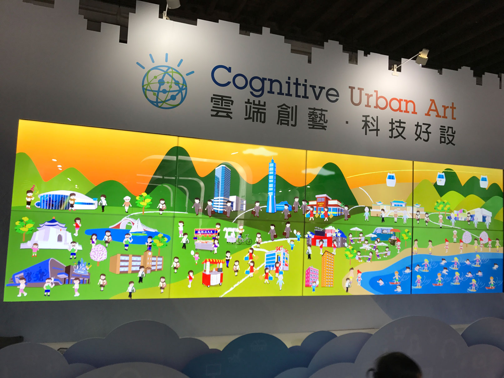
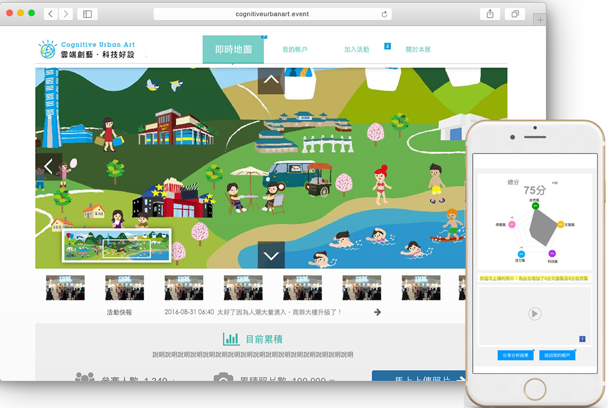
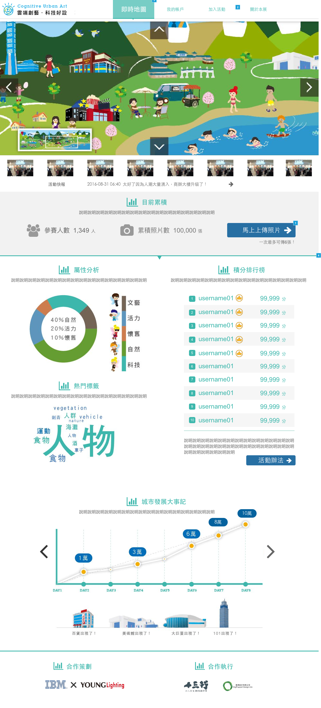
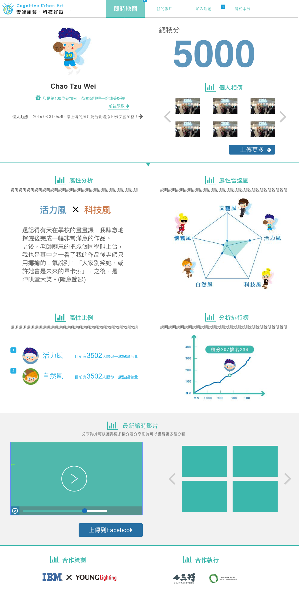

Cognitive Urban Art
Cognitive Urban Art is a cloud-based, cross platform, multi-screen interactive digital artwork, which applies IBM Watson “visual recognition” API and developed on IBM Bluemix. It is a joint effort by IBM Interactive Experience Designers and Taiwan local digital artists.
I was the UX Designer on this project to Collaborate with engineers, UI Designers and project managers in order to bring out the digital artworks. Expressed the design concept through back and forth communication with the team.
— UX Researcher, UX Designer
- Gamification Design
- Wireframing
- Prototyping
- Testing
Approach

As a multi-screen project, we built the wireframe for both web and mobile version of the works that increased the internal discussion efficiency.
As a design consultant, I have to made project plan and keep communicate with the multifunctional team to reach agreement through wireframe building and prototype making. I moderated the discussion session and assisted the internal communication flow becoming smoothly. My colleague and I designed the gamification logic of the interaction process and finally, we successfully bring out the interact-able artwork that shows “Taipei Lifestyle map” co-created by citizens.
Result
4
Persona
10+
Infographic Design
2
Pressure Testing


Our exhibition was host at Song Shan Culture Park for two weeks. We invited citizens to create a unique artwork on the cloud platform for the city of Taipei by uploading photos. The artwork will be constantly changing and displayed on a wall of screens as more photos are uploaded. The gamification system also encouraged visitors to participate in the interaction and even introduced the artworks to their friends through the power of social network.